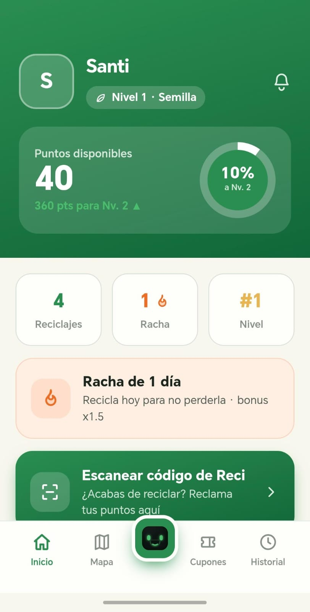
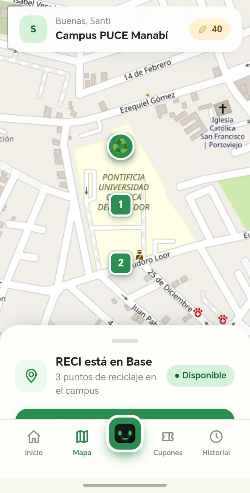
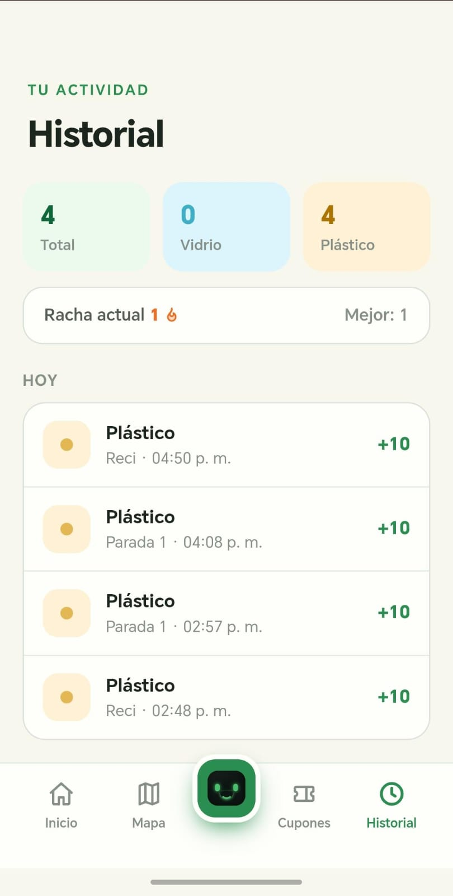
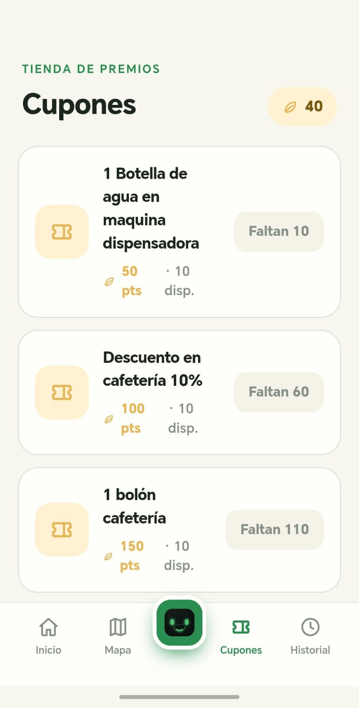

La falta de interés o motivación hace que separar residuos parezca una tarea adicional.
Proyecto integrador · 2026
RECI
Sistema inteligente de reciclaje asistido
Visión artificial · Sistema experto · Robótica · Plataforma web
Clasificación segura de plástico y vidrio.
01 / 31
01 · Problemática
El problema no es la intención: es la fricción de reciclar bien.
Cuando reconocer el material, buscar el tacho correcto o detenerse a decidir exige esfuerzo, muchas personas eligen la opción más fácil.
No asumimos mala intención. Buscamos transformar una acción que hoy puede sentirse tediosa en una experiencia guiada, rápida y motivadora.
La prisa y la comodidad llevan a depositar el residuo donde parece correcto, sin verificarlo.
El tacho convencional no guía, no confirma el resultado y no ofrece una razón para cambiar el hábito.
02 / 31
02 · Justificación
RECI hace que reciclar correctamente sea la opción más fácil.
◎
Menos esfuerzo
El sistema identifica el material y orienta el depósito sin depender de la memoria del usuario.
⌁
Respuesta inmediata
La compuerta, el LED y el mensaje confirman qué ocurrió y evitan la duda.
↗
Motivación medible
La aplicación convierte cada interacción en seguimiento, aprendizaje e incentivos.
La innovación no consiste solo en reconocer residuos: consiste en cambiar la experiencia que lleva a separarlos.
03 / 31
03 · Innovación y cambio de hábito
RECI cambia el hábito, no solo el destino del residuo.
La propuesta combina automatización y motivación para reducir la pereza, la duda y el esfuerzo percibido.
El usuario no necesita memorizar colores ni interpretar símbolos: presenta el residuo y recibe una guía.
La clasificación, el mensaje y la compuerta confirman inmediatamente qué ocurrió.
El historial y los incentivos convierten una tarea aislada en progreso que se puede observar.
Tacho convencionalExperiencia pasiva · sin guía · sin confirmación
RECIExperiencia dinámica · guiada · medible
No culpamos al usuario: rediseñamos la experiencia para que la conducta correcta requiera menos esfuerzo y tenga una recompensa clara.
04 / 31
04 · Integración del proyecto
Un proyecto integrador.
Cada materia aporta una parte esencial del MVP.
05 / 31
05 · Trabajo en equipo
Cuatro responsables conectan un solo sistema.
La división por frentes permite trabajar en paralelo sin separar la arquitectura.
Axel Hernández
Sistema experto · modelo ML · integración de IA
Paula Márquez
Aplicación · nube · gestión del proyecto
Leonela Sornoza
Aplicación · nube · hardware y pruebas
Andrea Campaña
Sistema experto · IA · hardware y pruebas
Integración compartida: cada subsistema entrega una interfaz verificable al siguiente.
06 / 31
06 · Presupuesto aprobado
La línea base de caja del proyecto es USD 233.
El presupuesto considera hardware y materiales; el trabajo estudiantil se registra como aporte académico en especie.
BAC real aprobado
$233,00
Presupuesto autorizado por el sponsor
$208,00 hardware y materiales · $25,00 imprevistos y ajuste
Fuera del BAC:512 horas estimadas del equipo, valorizadas referencialmente en $2.560,00, no representan un pago del sponsor.
Fuente: RECI_EVM_Presupuesto_CORREGIDO · presupuesto de caja aprobado.
07 / 31
07 · Control del presupuesto
El costo está controlado; el riesgo está en el cronograma.
Corte EVM: semana 12 de 16 · 75 % del tiempo transcurrido · 55 % de avance estimado.
Si se mantiene la eficienciaEAC $227,32ahorro estimado: $5,68
↔
Si el atraso presiona los costosEAC $265,20sobrecosto potencial: $32,20
Decisión de gestión: priorizar las tareas críticas restantes para que el retraso no convierta la eficiencia actual en sobrecosto.
Fuente: telemetría EVM RECI · corte semana 12 de 16.
08 / 31
08 · Arquitectura general
Arquitectura híbrida de RECI.
3 capturas QVGA
MobileNetV2 local
o desconocido
compuerta segura
Aplicación y plataformaAPI REST · estadísticas · historial · payload para Supabase
La IA no abre directamente una compuerta: primero pasa por una política de decisión segura.
09 / 31
09 · Flujo de funcionamiento
De la cámara a la compuerta.
- CapturaTres fotografías QVGA del residuo.
- DiagnósticoDos señales independientes por foto.
- VotaciónSe consolidan seis votos.
- OrdenSolo una decisión válida emite
CMD:CLASSIFY. - AcciónEl Mega abre una compuerta y luego la cierra.
Duda · error · empate no resoluble · respuesta incompleta → desconocido, sin apertura
10 / 31
10 · Detección, clasificación y rechazo
La clasificación combina presencia, tres capturas y evidencia independiente.
La decisión no depende de una sola lectura: el sistema reúne evidencia antes de mover el mecanismo.
Control de falsos positivosmúltiples capturasabstenciones que no sumanregla especial de empatedesconocido ante evidencia insuficiente
Meta de la demo para el nivel excelente: 10 de 10 intentos correctos y ninguna apertura ante un objeto indeciso.
11 / 31
11 · Cableado, alimentación y seguridad eléctrica
El cableado protege la decisión física.
- ESP32-CAM AI Thinker + OV3660 realiza la captura.
- Arduino Mega 2560 controla sensores y actuadores.
- Fuente externa dimensionada alimenta los servos sin exigir al regulador de la placa.
- Tierra común, cables fijados y sin cobre expuesto reducen falsos contactos.
Mapa de pines · UART bidireccional
ESP32 GPIO14/TX → Mega D17/RX2
Mega D16/TX2 → divisor 1 kΩ / 2 kΩ → ESP32 GPIO13/RX
Servos: vidrio D3 · plástico D4
El divisor protege al ESP32 frente a los 5 V del Mega.✓ Alimentación separada para servos✓ GND común✓ Conversión de nivel 5 V → 3,3 V✓ Cableado ordenado y fijado
12 / 31
12 · Arquitectura del controlador
El controlador separa responsabilidades y evita bloqueos.
leerSensor()Detecta presencia y valida la lectura.clasificarMaterial()Procesa la respuesta y acepta solo clases válidas.moverServo()Selecciona una compuerta y ejecuta el ciclo calibrado.gestionarErrores()Detiene la acción, informa y devuelve el sistema a espera.Máquina de estados finitos
Espera→Leyendo→Clasificando→Moviendo→Reset
Regla de seguridad: únicamente una clasificación válida permite pasar a Moviendo; cualquier error regresa a Reset sin activar servos.
La modularidad permite probar sensor, clasificación, comunicación y movimiento por separado.
13 / 31
13 · Actuación, separación y temporización
La compuerta ejecuta una secuencia calibrada y reversible.
t_caidaVariables que se calibran
angulo_abierto · angulo_cerrado · t_apertura · t_caida · t_cierre
Lo que se verifica
Movimiento suave · depósito correcto · una sola compuerta activa · ausencia de atascos.
Fallo seguro
DESCONOCIDO o ERROR → ninguna compuerta se abre.
Durante la exposición se muestran los valores finales calibrados y se repite el ciclo para plástico, vidrio y rechazo.
14 / 31
14 · Estructura física y documentación
El prototipo hace visible cada decisión.
Paquete de evidencia
01Diagrama de flujo completo
02Mapa de pines y alimentación
03Lista de materiales (BOM)
04Capturas de plástico, vidrio y error
Antes de exponer: fotografiar el prototipo terminado y colocar esas imágenes como evidencia de ensamblaje y rotulación.
15 / 31
15 · Sistema experto y política de decisión
Seis votos, una decisión explicable.
Proveedor + sistema experto
123
Tres respuestas: plástico, vidrio o desconocido.
+
MobileNetV2 local
123
Tres votos binarios sobre las mismas capturas.
6VOTOSUna salida segura
Las abstenciones no suman. En empate decide la mayoría del proveedor+sistema experto. Si sus tres respuestas son desconocidas, el modelo local necesita unanimidad 3/3. Si no hay evidencia suficiente: desconocido.
16 / 31
16 · Experiencia de la aplicación
La aplicación convierte cada reciclaje en una interacción.
Es el vínculo entre el usuario, el robot y la motivación para repetir la conducta correcta.
La aplicación responde directamente a la problemática: reduce el esfuerzo, da retroalimentación y añade una razón para volver a reciclar.
17 / 31
17 · Componentes de la aplicación
Cada componente tiene una responsabilidad clara.
Contrato entre capas
usuario → interfaz → API → motor de decisión → hardware → resultado → historialEsta separación mejora mantenibilidad, pruebas y evolución: la interfaz puede cambiar sin duplicar las reglas de clasificación.
18 / 31
18 · Aplicación principal
main.py convierte el razonamiento en una decisión utilizable.
Es el punto de entrada que integra clasificación, explicación, estadísticas y acción física.
Entrada estructuradaNueve atributos detectados por el módulo de visión.
InferenceEngineValida hechos, ejecuta reglas y calcula la confianza.
ExplanationReportExpone reglas disparadas, advertencias y trazabilidad.
RECIStatisticsRegistra clasificaciones, confianza y resultados de sesión.
Salida de clasificar_objeto()
conclusionVIDRIO · PLÁSTICO · DESCONOCIDO
confianzaFactor de certeza de la decisión
hardwareCompuerta · LED · servo · mensaje
reporteExplicación técnica exportable
payloadJSON preparado para Supabase
La demo principal recorre 10 casos: plástico, vidrio, orgánico, lata, objetos ambiguos y desconocidos.
19 / 31
19 · Tecnologías de plataformas
FastAPI expone RECI como un servicio reutilizable.
La misma lógica del sistema experto puede ser consumida por la cámara, una aplicación o un dashboard.
Clasificar
POST /clasificar/imagen
VerificarGET /health · /reglas
MedirGET /estadisticas
AuditarGET /historial · POST /reset
La plataforma implementa tecnología de la asignatura y deja una interfaz clara para Next.js y Supabase.
20 / 31
20 · Datos, trazabilidad y Supabase
Cada clasificación produce datos auditables.
Payload de clasificación
{
"fecha": "…",
"clasificacion": "VIDRIO",
"confianza": 0.94,
"reglas_disparadas": [ … ],
"compuerta": "vidrio",
"reciclable": true
}
Historial
Permite revisar decisiones anteriores y explicar cada resultado.
Estadísticas
Resume cantidad por material, confianza y objetos procesados.
Motivación
Alimenta puntos, progreso y retroalimentación para el usuario.
Mejora continua
Detecta casos dudosos y oportunidades de reentrenamiento.
Implementado
main.py y FastAPI generan resultados, estadísticas e historial.Integración de plataformaEl payload queda preparado para persistencia y visualización en Supabase.21 / 31
21 · Dataset y metodología experimental
Entrenamiento reproducible.
Imágenes indexadas por SHA-256 · división fija por sesión ESP32 · semilla de partición 42 · nueve corridas: tres arquitecturas × tres semillas.
22 / 31
22 · Implementación técnica y entrenamiento
Configuración reproducible.
1. CabezaAdam 1×10−3 · máximo 15 épocas · base congelada.
2. Ajuste finoAdam 1×10−5 · máximo 25 épocas.
3. ControlEarly stopping por macro-F1 · paciencia 6.
4. Función objetivoEntropía cruzada categórica dispersa.
5. AumentoVolteo horizontal · brillo ±30 · contraste 0,80–1,25.
Aumento aplicado solo a entrenamiento. El mejor checkpoint se selecciona con validación; la prueba reservada permanece intacta.
23 / 31
23 · Resultados experimentales
Resultados de los nueve experimentos.
Macro-F1 promedio · validación Keras float32
EfficientNet-B0
87,75 %
MobileNetV2
90,28 %
MobileNetV3-Large
93,63 %
9 corridas válidas
3 arquitecturas
3 semillas por arquitectura
El 93,63 % pertenece a validación controlada en Keras float32; no es el rendimiento del modelo desplegado.Una métrica alta en Keras no garantiza el mismo comportamiento en TFLite ni en la cámara real.
24 / 31
24 · Evaluación TFLite y pruebas operativas
Del laboratorio al hardware real.
ACTIVO · corrida histórica run_20260721_2129
MobileNetV2 · TFLite float32
Accuracy71,60 %
Macro-F171,25 %
75,15 %mayoría de tres capturas
RESPALDO · no desplegado
MobileNetV3-Large · TFLite INT8
Accuracy57,10 %
Macro-F157,09 %
59,09 %mayoría de tres capturas
Comparación operativa sobre 1.000 capturas OV3660/QVGA. No corresponde a la prueba reservada de 200 imágenes.
MobileNetV2 permanece activo porque conservó mejor calidad en el pipeline real.
25 / 31
25 · Curvas reales de entrenamiento
MobileNetV2 reentrenado · semilla 2.

entrenamiento
validación
inicio del ajuste fino
Gráfica real del pipeline reproducible; evidencia experimental del reentrenamiento, no del artefacto histórico activo.
26 / 31
26 · Evaluación por clase
Evaluación del MobileNetV2 reentrenado.
Semilla 2 · validación fija de 199 imágenes · partición con semilla 42

Métricas generales
91,46 %Accuracy
91,45 %Macro-F1
199 imágenes evaluadasPlástico
93,68 %Precision89,00 %Recall91,28 %F1
Soporte: 100 imágenesVidrio
89,42 %Precision93,94 %Recall91,63 %F1
Soporte: 99 imágenesEl MobileNetV2 reentrenado mantuvo un rendimiento equilibrado entre plástico y vidrio. El error más frecuente fue clasificar 11 imágenes de plástico como vidrio.
Resultados de validación del MobileNetV2 reentrenado con semilla 2. No corresponden a las métricas operativas del modelo histórico activo.
27 / 31
27 · Demostración funcional
La demo prueba decisión, actuación y fallo seguro.
Una serie de 10 intentos —meta 10/10— y tres escenarios muestran la funcionalidad completa, no solo una predicción aislada.
Plástico válido
Captura → clasificación → LED verde → abre solo la compuerta de plástico → cierre.
Resultado esperado: depósito correctoVidrio válido
Captura → clasificación → señal de vidrio → abre solo su compuerta → cierre.
Resultado esperado: depósito correctoDuda o material no permitido
Error, empate, baja evidencia o respuesta incompleta se convierten en desconocido.
Resultado esperado: ninguna aperturaEvidencia visible10 intentos y aciertos·captura·clasificación·LED y compuerta·registro en aplicación/API
28 / 31
28 · Calidad, seguridad y documentación
Protección del MVP.
Pruebas automatizadas, reglas verificables y comportamiento seguro.
El cambio de modelo no modifica las reglas, el firmware ni las condiciones de seguridad.La evidencia técnica incluye flujo, pines, materiales y tres escenarios de prueba.
29 / 31
29 · Evidencias para las dos rúbricas
La exposición conecta criterio, implementación y prueba.
Proyecto final de reciclaje
Detección y clasificaciónSensor, tres capturas, seis votos y rechazo seguro.
Actuación y temporizaciónUna compuerta, variables calibradas y prueba sin atascos.
Arquitectura del códigoFunciones modulares y FSM de cinco estados.
Seguridad eléctricaFuente externa, GND común, divisor y conexiones protegidas.
Estructura y documentaciónIngreso, rótulos, BOM, pines, flujo y tres escenarios.
Tecnologías de plataforma
Tecnología y funcionalidad · 40 %FastAPI, Next.js, Supabase y flujo completo demostrable.
Calidad y arquitectura · 25 %Componentes, API compartida, validación y pruebas.
Innovación · 10 %Automatización más motivación para cambiar el hábito.
Documentación y presentación · 20 %Evidencias técnicas y demo ordenada de tres casos.
Trabajo en equipo · 5 %Responsables por frente e integración compartida.
Orden de defensa recomendado: problema → solución → arquitectura → aplicación → hardware → resultados → demostración → evidencias.
30 / 31
30 · Cierre y propuestas de mejora
RECI decide con evidencia.
Análisis de Circuitos · Sistemas Expertos · Tecnologías de la Plataforma · Manejo y Gestión de Proyectos
Estado actual
- MobileNetV2 TFLite float32 permanece activo.
- La aplicación principal integra inferencia, explicación, estadísticas y hardware.
- FastAPI expone clasificación, salud, reglas, métricas e historial.
- El sistema experto y la integración Python–firmware mantienen sus pruebas aprobadas.
- Los escenarios de error no generan órdenes de apertura.
Próximos pasos
- Ejecutar una sola vez la prueba reservada de 200 imágenes.
- Mejorar la cuantización y ampliar ejemplos difíciles.
- Completar la persistencia y visualización de datos en Supabase.
- Ampliar pruebas de iluminación, fondos y posiciones.
- Evaluar el sistema completo durante un piloto controlado.
- Mantener reversión antes de reemplazar el modelo activo.
No elegimos únicamente el modelo con la cifra más alta: elegimos el artefacto que conserva su calidad dentro del sistema real.
31 / 31
Anexo I · Evidencias de funcionamiento
Aplicación móvil: interacción del usuario.
Capturas de la interfaz implementada para consultar puntos de reciclaje, registrar progreso y revisar actividad.



32 / 33
Anexo II · Evidencias de funcionamiento
Recompensas y operación administrable.
La plataforma conecta la motivación del usuario con la gestión de cupones y la supervisión del robot.


33 / 33